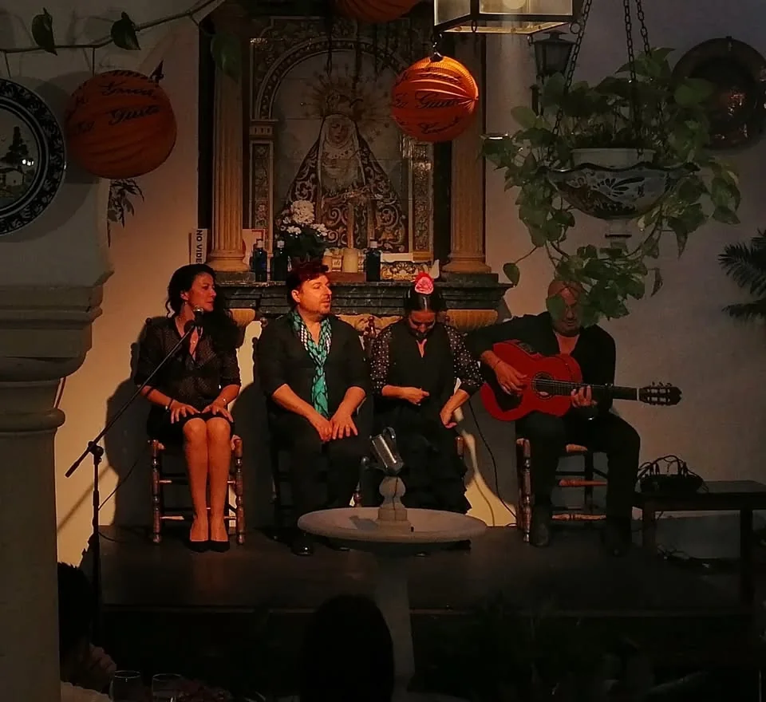
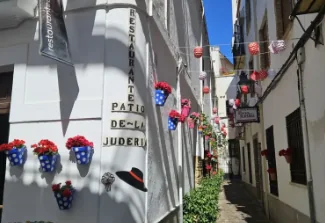

CÓRDOBA · RESTAURANTE & FLAMENCO
Cada noche
tiene su historia.
Cada plato,
la suya.
La esencia de Córdoba se sirve en nuestra mesa.
Descubre los sabores que forman parte del Patio.
COCINA CON RAÍCES. NOCHES CON ALMA.

UN PATIO. MIL HISTORIAS.
01 — EL PATIODonde Córdoba
se siente.
LOS IMPRESCINDIBLES DEL PATIO
Nuestros platos
más solicitados
Ocho sabores para empezar a descubrirnos.
Tradición cordobesa, con el sello del Patio.
Desliza para descubrir los ocho platos
DENTRO DEL PATIO
Sabores con raíces.
Noches con alma.
Cocina cordobesa y flamenco, alrededor de la misma mesa.
MUCHO MÁS QUE UNA CENA
El sabor se queda.
El recuerdo, también.
Gastronomía andaluza y arte flamenco en el corazón de la Judería. Una mesa, una guitarra y todo por sentir.
Reserva tu mesa ↗